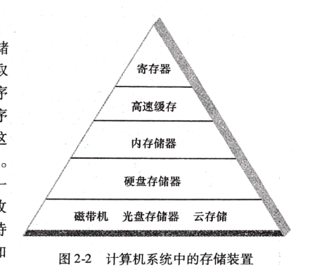
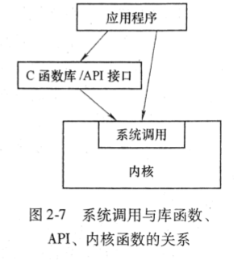
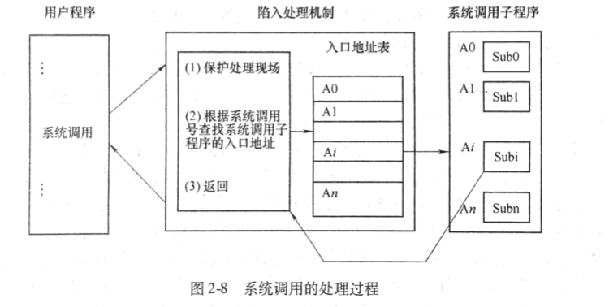

操作系统
Table of Contents
第一章-操作系统概述
操作系统分类
操作系统从早期到如今发展了很久，下面介绍从早到如今的操作系统类别
批处理操作系统
批处理操作系统是操作系统发展时代的早期产物，其工作方式是:
基本工作方式
用户将作业交给系统操作员，系统操作员收到后一定数量的作业后将其组成一批作业，再将其输入到计算机中，随后计算机自动、依次执行每个作业，最后由系统操作员将结果返还给用户。
特点与分类
成批处理。
- 缺点
运行时，如果出错则无法及时更正，必须在修改后重新排队运行，开发时长过长。
- 优点
系统资源利用率高，作业吞吐率高。
SPOOLing技术
为了提高硬件资源的利用率，人们在监控程序中间引入了缓冲技术和多道程序设计的概念。使得简单的批处理系统发展为更为高级的多道批处理系统。
SPOOLing(Simultaneous Peripheral Operating On-Line)技术全称为“同时的外部设备联机操作”，基本设计思想是用磁盘设备作为主机的直接输入输出设备，主机直接从磁盘上选取作业运行，作业的执行结果也存储在磁盘上；
分时系统
分时系统是为了弥补批处理方式不能向用户提供交互式快速服务的缺点而出生的。
基本工作方式
一台计算机连接了若干个终端，每个终端可由一个用户使用，用户使用终端交互式地向系统提出命令请求，系统接受用户的命令之后，采用时间片轮转方式处理服务请求，并且通过交互式的方式在终端上向用户显示结果。
设计思想
分时操作系统将处理器运行时间划分为多个小片段，称为时间片。每个时间片极快，处理器将会依次处理这些时间片的命令，由于速度极快，用户通常无法感受到卡顿。
特点
交互性，“独占”性，及时性，多路性
- 多路性 多用户同时使用一台计算机。
- 交互性 用户根据系统响应的结果提出下一个请求。
- 独占性 每个用户只能感受到计算机只为他一人服务。
- 及时性 计算机能及时对用户提出的请求给予响应。
实时操作系统
RTOS(Real Time Operating System)实时操作系统，具有高度可靠性，其使计算机在规定时间内，及时响应外部事件的请求，同时完成对该事件的处理，并且能够控制所有实时设备和实时人物协调一致地工作。 实时操作系统是较少有人为干预的监督和控制系统
- 主要目标
在严格时间范围内，对外部请求做出反应，系统具有高度可靠性。
- 硬实时系统
是指对关键外部事件的响应和处理时间有着极其严格的要求，例如火箭和导弹控制，这些如果出现延迟可能会造成严重的不良后果。
- 软实时系统
是指对外部时间的响应和处理时间有一定的要求，不过在不满足要求时只会影响服务质量，而不会造成严重的后果，例如视频处理，等。
- 实时操作系统必备功能
- 实时时钟管理
实时任务根于时间要求分为两类:
- 定时任务 再周期严格按照指定的时间间隔重复运行。
- 延时任务
非周期内重复运行，有时间界限，根据任务功能不同分为两类:
- 主动式 根据时间间隔主动运行，例如实时监控。
- 从动式 依赖外部事件的触发运行。
- 过载防护 如果遇到大量实时任务，可能会超出系统的处理能力，那么就需要及时分析并找出最重要的实时任务，将次要任务延期或抛弃以保证最重要任务的执行。
- 高可靠性 要求实时操作系统具有很强的健壮性，坚固性。不仅要求软件系统也要对硬件系统做严格的要求。
- 实时时钟管理
实时任务根于时间要求分为两类:
嵌入式操作系统
嵌入式操作系统运行在嵌入式芯片环境中。 其优点是:
- 高可靠性
- 实时性
- 占有资源少
- 智能化能源管理
- 易于连接
- 低成本
嵌入式操作系统可根据需求对系统的功能进行裁剪、调整、和生成。 嵌入式操作系统主要应用在工业监控、智能化生活空间（家电）、通信系统、导航系统等。
个人计算机操作系统
个人计算机操作系统(Personal Computer OPertaing System)，是一种单用户多任务的操作系统。 其特点是:
- 可供个人使用
- 功能强
- 价格便宜
网络操作系统
网络操作系统(Network Operating System)基于计算机网络。 用于将计算机网络上的各个计算机连接，目的是互相通信，资源共享。 计算机网络分为两大模式:
- 集中式
运算由主机处理，多个终端仅作为输入/输出设备使用。
- 分布式
每台计算机都做运算处理，通过网络进行数据交换和资源共享服务。分布式还能共享运算处理能力。
分布式操作系统
分布式操作系统(Distributed System)由大量计算机通过网络连结起来。 特点:
- 多台主机使用相同的操作系统。
- 实现资源的深度共享。
- 透明性。分布式操作系统在用户眼里是一台具有强大功能的计算机系统。而网络操作系统则会感觉到本地主机和非本地主机之间的区别。
- 自治性 分布式系统中的每台主机没有主从关系，一个主机失效一般不会影响其他主机。
操作系统设计
本小节谈谈操作系统的设计开发所面临的问题，以及对操作系统的设计阶段、设计目标及结构设计做探讨。
设计操作系统中面临的困难:
- 设计复杂程度高
主要表现在:
- 程序长
- 接口信息多
- 动态性强
- 并行性强
- 正确性难以保证 由于操作系统包含的功能巨大，并且对各种外部设备提供的接口复杂，导致源码的正确性难以保证，目前操作系统的正确性主要依靠软件开发的规范保证。
- 研制周期长 由于操作系统的复杂性，研发周期会随之变长。
操作系统的设计过程
由三个过程涵盖，并且每方面是互相渗透，不能截然分开。
- 功能设计 根据操作系统的设计目标和使用要求，确定所需要具备的功能。
- 算法设计 根据计算机的性能和操作系统的功能来选择和设计满足系统功能的算法和策略、并且分析和估算其效能。
- 结构设计 根据系统的功能和特性要去，选择合适的结构。使得系统结构清晰、简明、可靠、易读、易修改，并且使用方便，适应性强。
操作系统的设计目标
作了解即可。
操作系统的结构
作了解即可。
第二章-操作系统运行环境
处理器
处理器的构成与基本工作方式
| 组成 | 作用 |
|---|---|
| 运算器 | 实现指令中的算术和逻辑运算 |
| 控制器 | 控制程序运行的流程(取指令、维护处理器状态、处理器与内存的交互) |
| 寄存器 | 暂存处理器执行指令过程中的数据、地址及指令信息（速度最快） |
| 高速缓冲 | 为了解决CPU与内存速度不匹配的问题 |
处理器中的寄存器
指令执行的基本过程
两个步骤:
- 读取 处理器从存储器读取指令，并自动根据指令类别将PC的值变成下一条指令的地址
- 执行 将取到的地址存储在IR中，随后由处理器解释执行指令。
五个指令类别:
- 访问存储器指令 作用: 处理器和存储之间数据传输
- I/O指令 作用: CPU和I/O模块之间的数据传输及命令发送
- 算术逻辑指令 作用: 执行数据相关的算术和逻辑操作
- 控制转移指令 作用: 指定新指令的执行起点
- 处理器控制指令 作用: 修改处理器状态，改变处理器工作方式
特权指令
- 解释 只能由操作系统使用的指令。
- 如何工作 由于普通用户无法直接使用特权指令，所以如果一个用户程序需要使用特殊指令，将引起一次处理器状态的切换，随后CPU通过特殊的机制，将CPU状态切换到OS运行的特权状态，随后将处理权移交给OS的一段特殊代码，这个过程被称为陷入(Trap)
非特权指令
操作系统和用户程序都能使用的指令。
处理器工作状态
管态和目态
- 管态
指OS管理程序运行的状态，有较高的特权级别
- 别名
- 内核态
- 特权态
- 系统态
- 别名
- 目态
指用户程序运行时的状态，有较低的特权级别
- 别名
- 用户态
- 普通态
- 别名
- 其他种类的状态 有些特殊的系统将处理器工作状态分为核心状态、管理状态、用户程序状态
处理器工作状态的转换
- 目态到管态的转换 通过中断实现。中断响应时交换中断向量，随后将新的中断向量的PSW(程序状态字)的CPU状态位标志为管态。
- 管态到目态的转换 通过设置PSW指令转换。
- 其他 CPU处理管态可执行任何指令，而处于目态时不允许执行特权指令。计算机启动时，CPU的初始状态为管态，随 后加载OS。OS退出执行后，用户程序在目态执行。
限制用户程序执行特权指令
当CPU处理用户程序时，应当在目态下工作，若出现意外用户程序取得特权指令，CPU会拒绝执行，并触发“非法操作”事件，随中断机制捕获该事件后，转交至OS处理，例如由OS通知用户程序：“程序中有非法指令”
程序状态字(PSW)
为了控制好OS与用户程序的可使用指令权限级别，CPU引入了管态和目态两种状态，而PSW用于标记当前CPU应当以什 么状态运行。 PSW通常具有以下状态代码:
- CPU工作状态代码 指明CPU的工作状态。
- 条件码 执行指令后的结果特征
- 中断屏蔽码 指明是否需要中断
PSW在不同的CPU下有不同的格式，其包含的信息也不同，常见的程序状态字信息有:
- CF
- 进位标志位
- ZF
- 结果为零标志位
- SF
- 符号标志位
- OS
- 溢出标志位
以上四个是基本标准标志位，下面还有一个特殊的标志位
- TF
- 陷阱标志位
- IF
- 中断屏蔽标志位
- VIF
- 虚拟中断标志位
- VIP
- 虚拟中断待决标志位
- IOPL
- IO特权级别
计算机系统硬件部件
存储系统
存储器的类型
- RAM(Random Access Memory随机访问内存) 随时可写可读的存储器，主要作用是存储需要随机存取的程序的数据
- ROM(Read-Only Memory只读访问内存) 通常只能读取的存储器，想要写入比如使用特殊方式。
- PROM 一种可编程只读存储器，用户使用特殊的PROM写入器向其中写入数据
- EPROM 特殊的存储器，由特殊设备紫外线光照形变用擦除和写入数据。
存储分块
- 二进制位
- 存储数据最小单位 0/1
- 字节
- 存储器最小编址单位 1字节=8个二进制位
- (no term)
- 硬盘 存储量较大，可达到2TB~8TB
有些计算机系统将存储器分成块，每个块的随机读写区域大小不同，例如512KB\1KB\8KB等，每个块被称为物理页(Page)
存储器的层次结构
设计存储器的三个考虑要点:
- 容量
- 速度
- 成本
- 容量、速度和成本的匹配
容量、速度、成本这三者无法兼得，容量大，速度慢，成本低，速度快，容量小，成本高。
- 存储访问局部性原理
由于现代程序设计技术大量采用程序代码复用，所以一旦进入这些程序段，OS就会存取相同的指令集合。 总的来说就是速度快的存储器，CPU更愿意使用它，因为这样更快。  基于这一原理，就有充分的理由设计出多级存储的体系结构，并使得存储级别较低的存储器的比率小于存储级别较高的存储器的比率
- 存储器保护
为了防止数据安全，健全性，必须实现存储保护，并且存储保护必须会有硬件的支持。 常见的存储保护技术:
- 界地址寄存器 这是一种较为易于实现的保护技术，其实现是为某程序的内存设置一对由界限寄存器保存的下限和上限内存地址，或者 是直接将一个寄存器作为基址寄存器，另一个则作为限长寄存器，当CPU访问内存时，硬件会自动将被访问内存地址与界 限寄存器的内容比较，判断是否越界，如果越界则中断，否则正常运行。
I/O部件
I/O结构
- 原理 一台计算机有大量的外部设备，这些设备会进行I/O操作，为了对这些设备进行控制，提高处理器与外部设备的运行效率，出现各种不同的I/O硬件结构。 每个外部设备都有一个I/O设备控制器，早期的计算机系统，外部设备的控制器通过I/O硬件结构与CPU连接，CPU会以周期形式轮询每个I/O设备控制器的状态，当发现有I/O处理请求，CPU及处理，直到处理完毕，CPU才会执行其他指令。
- 缺陷 CPU为了处理I/O设备控制器的请求，必须花费时间轮询它们，这样效率太低，已经淘汰。
通道
通道主要在大型机系统上使用，其原理:
- 原理 其替代了CPU对I/O操作直接控制的方式。 CPU按照程序执行顺序依次执行指令，若执行到启动I/O指令时，将使用指令附带的参数启动指定的设备，随后将其控制权转交给通道，通道会控制外部设备的有关操作。 这样的I/O结构就实现了CPU与外部设备的并行工作。
- 特点
- 通道是独立于中央处理器的，专门负责数据I/O传输工作的处理单元。
- 通道技术一般用于大型机系统和对I/O处理能力要求比较严格的系统中。
DMA(Direct Memory Access)技术
- 原理 DMA技术将数据成块的在内存和外部设备之间传输，例如当处理器需要读写一整块数据时，DMA控制单元发送命令，命令包含了外部设备的编址，需要读写的内存编址以及传输的数据长度，是否请求一次读或写等信息。 随后这些外部设备就都由DMA控制单元控制，CPU就不需要采理了(除了结束和开始)。
- 特点
- DMA技术通过系统总线中的独立控制单元————DMA控制器，自动地控制成块数据在内存和I/O单元之间的传送。
缓冲技术
- 用途
- 外部设备与外部设备之间通信
- 外部设备与CPU之间通信
- 原理 当需要输入输出数据时，先将数据放置缓冲器内，随后CPU再处理缓冲区内的数据。
- 根本原因 CPU处理速度与设备传输速度不相匹配。
时钟部件
时钟部件的作用:
- 多道程序运行环境中，为系统发现陷入死循环的错误，防止资源浪费
- 分时系统中，周期制地运行各个时间片的作业。
- 实时系统中，根据指定间隔时间输出正确时间信号给实时控制设备
- 定时唤醒事先指定时间执行的外部事件
- 记录用户使用设备日志
- 记录用户和系统所需要的绝对时间，年月日。
硬件时钟
主要用于绝对时间
- 原理 根据电路中的晶体振荡器，周期性的产生固定的脉冲频率，时钟电路中的时钟寄存器一句时钟电路所产生的脉冲数，对时钟寄存器进行加1的工作。
软件时钟
主要用于相对时间
- 原理 利用内存单元模拟时钟寄存器，并采用一段程序计算相应的脉冲数，对内存时钟寄存器进行加1减1的工作，从而模拟了时钟的功能。
两种时钟的对比
- 软件时钟(相对时钟) 相对时钟只计算某一时间初值开始的一段时间间隔。
- 硬件时钟(绝对时钟) 绝对时钟不受外界干扰，计算关机也不会停止，并且十分准确。
中断机制
这一节很重要。 中断机制依赖硬件支持。
中断与异常的概念
中断与异常
- 中断的概念
- 中断的定义 中断是指CPU对OS中或OS外发生的异常事件的响应。 异常事件是指 无一定时序关系发生的随机事件，例如出错。
- 中断的含义
中断将会打乱CPU正常工作次序，并要求CPU处理某一事件的手段。
引起中断的事件称为中断事件或中断源；
- 中断源 中断源向处理器发送请求信号叫做中断请求;
- 中断处理程序 处理中断事件的程序称为中断处理程序；
- 中断断点 发生中断时暂停正在执行的程序的点叫做中断断点；
- 中断响应 CPU暂停当前程序转而处理中断的过程称作中断响应；
- 中断返回 中断处理结束之后恢复原本程序的执行称作中断返回；
- 中断字 一个计算机系统提供的中断源的有序集合；
- 中断向量表 使得中断装置能找到恰当的中断处理程序;
- 中断向量 中断向量表中的每个项，由PSW和PC的指组成
- 中断技术的作用
解决了主机和外设并行工作的问题，消除了因外设的慢速而使得主机等待的现象，为多机操作和实时处理提供了硬件基础。
- 提高CPU使用效率 输入输出设备可通过发起中断请求与CPU通信，提高了效率，不用CPU不断的查询和等待了。
- 提高OS的实时能力 可以通过中断的能力使得一些实时需求较高的程序能立即被CPU执行。
- 异常
异常跟中断早期是一个概念，后来区分开来。 异常是正在执行的指令引发的，而中断是由外部事件引发的。
中断与异常的分类
典型的中断包括:
- 时钟中断 由CPU内部的计时器产生，用来让OS周期性的执行函数。
- 输入输出(I/O)中断 由I/O控制器产生，用于通知一个I/O操作完成或发生的错误。
- 控制台中断 由OS操作员通过控制台发出命令。
- 硬件故障中断 由掉电、存储器校验错误引起。
典型的异常包括:
- 程序性中断 在特殊条件下由指令执行结果引发，例如零作被除数，目态程序试图执行特权指令。
- 访管指令异常(自愿性中断) 用于使OS提供OS服务
中断系统
中断系统由硬件和软件结合，可把其分为两大组合: 中断系统的硬件中断装置和软件中断处理程序。
中断请求的接收
中断系统通过硬件的中断逻辑线路和中断寄存器实现接受中断源的请求。
- 中断逻辑线路 其用于接受中断信号，将接收到的中断信号存在其硬件触发器中，中断逻辑线路中有若干个专门接受中断信号的触发器，每个触发器称为一个中断位。如果中断位的值为1则代表收到中断信号，0则为无中断信号。
中断响应
简单来说分为五步
- CPU接收中断信号
- 保护现场，将中断断点的PSW和PC值存入系统堆栈
- 分析中断向量，取得中断处理程序的入口地址
- 将CPU的PC值设置为中断处理程序的入口地址
- 调用中断处理程序
中断处理
中断处理程序工作步骤:
- 检查I/O相关的状态信息
- 操纵I/O设备或在设备和内存之间传送数据
- 根据中断请求的类别和需求不同有不同的做法
- 中断处理程序结束后，CPU将会检测到中断返回指令
- 随后CPU会将原本中断程序的上下文环境从系统堆栈中恢复。
- 最后CPU状态将从管态恢复到中断时的状态。
几种典型中断的处理
- I/O中断
由I/O设备控制器或通道发出，分为两类:
- I/O操作正常结束 如果还需要进行I/O操作，则会重启I/O，若请求I/O的程序处于等待状态将会被唤醒。
- I/O操作异常 会尝试重复执行多次，如果达到上限会被视作硬件损伤，系统将判定硬件鼓掌。
- 时钟中断
- 硬件故障中断
- 程序性中断
- 系统服务请求（自愿式中断）
中断优先级、中断屏蔽与中断嵌套
多级中断和中断优先级
- 多级中断
- 定义 从硬件上看，多级的中断系统表现为有多根中断请求线从不同设备连接到中断逻辑线路上。
- 作用
- 对各类中断信号依据其紧急程度和重要性划分等级。
- 解决重要程度相当的多个中断信号同时到达时，如何选择首个被处理的中断信号的问题。
- 原理 在多级中断系统中，在同时有多个中断请求时，处理器接受中断优先级为最高的（如果其中断优先级高于当前运行程序的中断优先级时），而忽略其中断优先级较低的中断。
- 中断屏蔽
- 定义 中断系统中，可以允许或禁止中断系统对某些类别中断的响应。
- 原理 中断系统根据PWS中的中断屏蔽位决定是否要屏蔽一个中断。
- 其他情况 部分中断无法被屏蔽。例如，硬件故障，内存校验错，掉电中断等。
- 中断嵌套
中断嵌套是由多级中断引发的
- 定义 当中断处理程序在处理一个中断时引发的新的中断。
- 解决方案一
在中断处理程序处理中断前将挂起所有新的中断，直到处理完毕当前中断后，处理器再次允许处理中断。
- 缺点 没有考虑到紧急的中断信号，无法达到较严格的中断处理时间要求。
- 解决方案二
这种方案即中断嵌套，允许优先级高的打断优先级低的中断处理过程。
- 具体实现 被中断嵌套打断的中断处理过程的现场（PSW，PC及其他现场信息）会被以堆栈的数据结构保存在系统空间中，最后逐层恢复现场。
系统调用
本节主要讲解的是，系统调用的概念，系统调用的分类，系统调用的执行过程。 系统调用主要是提供给编程人员的接口，并且也是唯一能操作硬件的接口。 系统调用的具体动作不会被用户察觉，用户只知道其有关功能。
系统调用与函数调用的区别
- 运行在不同的系统状态下 普通函数调用，调用者和被调用者都在目态。 而系统函数调用则是，调用者在目态，被调用者在系统态。
- 状态的转换 普通函数调用不涉及目态或管态的转换，而系统调用会。
- 返回问题 普通函数调用完后需要经过一系列的进程优先级划分（根据不同调度方式）等级，而系统调用则会直接将其放入就绪队列。
- 嵌套调用 系统调用对嵌套调用层数有一定限制。
系统调用的分类
系统调用分为，系统自身需要和用户服务需要。可将系统提供的系统调用分为以下几个方面:
- 进程控制类系统调用 例如，创建、终止、获取、设置进程等控制进程的操作。
- 文件操作类系统调用 :: 常用 例如，创建、删除、打开、新建文件/目录，修改文件属性等操作。
- 进程通信类系统调用 例如，进程间互相通信等操作。
- 设备管理类系统调用 例如，请求、释放、启动设备等操作。
- 信息维护类系统调用 查看系统有关属性，例如，用户数、版本号、文件修改时间等操作。
系统调用与库函数、API、内核函数的关系
用户可以通过库函数或API来使用内核函数从而使用系统调用，其关系图如下: 
系统调用的处理过程
基本原理
- 前提条件 操作系统内提前编写好了实现系统调用功能的子程序，随后编程人员根据给定的系统调用名使用。
- 具体过程
- 开始 当用户态的进程进行系统调用的指令被处理器执行时，就会被中断，随后启动相关的处理程序来实现用户所需的系统功能。
- 结束 如果用户程序得到系统调用结构后仍需，异常处理机制还需保存CPU现场，否则将需要恢复CPU先场。
- 其他 控制系统调用的机制称为陷入(Trap)或异常处理机制，而引发陷入机制的指令称为访管指令(Trap/异常)。
具体实现
见书本p73页，图2-8上的一段。 
思考题与练习题
请简述处理器的组成和工作原理。你认为哪些部分和操作系统密切相关，为什么？ 处理器的组成有:
- 运算器
- 控制器
- 寄存器
- 高速缓存器
我认为寄存器与操作系统密切相关，因为控制寄存器中的PSW实现管态、目态、中断屏蔽码、条件码等需求。
- 为了支持操作系统，现代处理器一般都提供哪几种工作状态，以隔离操作系统和普通程序？每种状态各有什么特点?
现代操作系统提供的工作状态有:
- 管态
- 特点 由操作系统管理程序运行的状态，可以使用特权指令和非特权指令，具有较高的特权级别
目态
- 特点
由用户或操作系统管理程序运行的状态，只能使用非特权指令，具有较低的特权级别
- 管态
- 计算机系统中既有操作系统程序，又有用户程序，在什么情况下操作系统才能占用中央处理器？ 答: 当需要使用特权指令时，引起一次处理器状态切换，此时处理器通过中断机制，将目态转为管态，随后将处理权交给操作系统的一段代码，操作系统才能占用CPU。
- 为什么要把“启动I/O”等指令定义为特权指令？ “启动I/O”等其他特权指令如果对普通用户程序随意开放，会影响数据或硬件的安全性，例如“启动I/O”指令启动的设备可由通道统一有序地管理，如果由用户程序随意使用就有可能出现冲突。
- 怎样限制用户程序中使用特权指令？ 当CPU处理用户程序时，应当在目态下工作，若出现意外用户程序取得特权指令，CPU会拒绝执行，并触发“非法操作”事件，随中断机制捕获该事件后，转交至OS处理，例如由OS通知用户程序：“程序中有非法指令”
- 什么是分级的存储体系结构，它主要解决了什么问题？
从整个系统上看，计算机存储体系结构是由寄存器、高速缓存器、内存储器、硬盘存储器、磁带机、和光盘存储器构成。
它主要解决了:
- 容量、速度和成本的匹配 容量、速度、成本三者无法兼得。容量大，速度慢，成本低。速度快，容量小，成本高。
- 存储访问局部性 由于现代程序设计技术大量采用程序代码复用，所以一旦进入这些程序段，OS就会存取相同的指令集合，也就是说处理器更愿意使用速度更快的存储器。
- 请简述程序局部性原理
- 作用 局部性原理主要是为了提高存储系统效能
- 原理 现代程序经常将代码复用，一旦进入这些程序段，就会重复存取相同的指令集合，数据存取也有类似的局部性现象。
- 什么是存储保护，有哪些方法实现存储保护？
存储保护是为了数据安全，健全性。
存储保护必须有硬件的支持，常见的存储保护技术:
- 界地址寄存器 为某程序的内存设置一对界限寄存器保存的上限、下限内存地址，当CPU访问时，硬件会直接将被访问内存地址与界限寄存器的内容比较，判断是否越界等非法操作。
- 操作系统与硬件如何配合来实现存储保护的？ 同上
- 常用的I/O控制技术有哪些，各有什么特点？
常用的I/O控制技术有以下几点:
- 通道
- 通道是独立于中央处理器的，专门负责数据I/O传输工作的处理单元。
- 通道技术一般用于大型机系统和对I/O处理能力要求比较严格的系统中。
- 通道技术可以实现并行操作。
- DMA技术
- DMA技术通过系统总线中的独立控制单元————DMA控制器，自动地控制成块数据在内存和I/O单元之间的传送。
- 缓冲技术
- 当需要输入输出数据时，先将数据放置缓冲器内，随后CPU再处理缓冲区内的数据。
- 通道
- 缓冲技术在计算机系统中起着什么样的作用，它是如何工作的？
- 作用 外部设备与外部设备之间通信 外部设备与CPU之间通信
- 原理 当需要输入输出数据时，先将数据放置缓冲器内，随后CPU再处理缓冲区内的数据。
- 时钟对操作系统有什么重要作用？
- 多道程序运行环境中，为系统发现陷入死循环的错误，防止资源浪费
- 分时系统中，周期制地运行各个时间片的作业。
- 实时系统中，根据指定间隔时间输出正确时间信号给实时控制设备
- 定时唤醒事先指定时间执行的外部事件
- 记录用户使用设备日志
- 记录用户和系统所需要的绝对时间，年月日。
- 硬件时钟怎样实现，其作用是什么？
- 作用 用于绝对时间 绝对时钟不受外界干扰，计算机关机也不会停止，并且十分准确。
- 原理 根据电路中的晶体振荡器，周期性的产生固定的脉冲频率，时钟电路中的时钟寄存器一句时钟电路所产生的脉冲数，对时钟寄存器进行加1的工作。
- 软件时钟怎样实现，其作用是什么？
- 作用 相对时间 软件时钟只计算某一时间初值开始的一段时间间隔。
- 原理 利用内存单元模拟时钟寄存器，并采用一段程序计算相应的脉冲数，对内存时钟寄存器进行加1减1的工作，从而模拟了时钟的功能。
什么是中断，为什么说中断对现代计算机很重要？ 中断是指处理器对操作系统中或操作系统外发生的异常事件的响应。
解决了主机和外设并行工作的问题，消除了因外设的慢速而使得主机等待的现象，为多机操作和实时处理提供了硬件基础。
- 提高CPU使用效率 输入输出设备可通过发起中断请求与CPU通信，提高了效率，不用CPU不断的查询和等待了。
- 提高OS的实时能力 可以通过中断的能力使得一些实时需求较高的程序能立即被CPU执行。
- 中断的作用是什么？
解决了主机和外设并行工作的问题，消除了因外设的慢速而使得主机等待的现象，为多机操作和实时处理提供了硬件基础。
- 提高CPU使用效率
输入输出设备可通过发起中断请求与CPU通信，提高了效率，不用CPU不断的查询和等待了。
- 提高OS的实时能力 可以通过中断的能力使得一些实时需求较高的程序能立即被CPU执行。
- 提高CPU使用效率
输入输出设备可通过发起中断请求与CPU通信，提高了效率，不用CPU不断的查询和等待了。
- 中断向量是什么，其作用是什么？
中断向量是中断向量表中的每个项，由PSW和PC的指组成。
- 作用 通过中断向量，可以找到中断处理程序在内存中的位置。
- 中断响应主要哪些工作？
简单来说分为五步
- CPU接收中断信号
- 保护现场，将中断断点的PSW和PC值存入系统堆栈
- 分析中断向量，取得中断处理程序的入口地址
- 将CPU的PC值设置为中断处理程序的入口地址
- 调用中断处理程序
- 中断处理的主要步骤是什么？
中断处理程序工作步骤:
- 检查I/O相关的状态信息
- 操纵I/O设备或在设备和内存之间传送数据
- 根据中断请求的类别和需求不同有不同的做法
- 中断处理程序结束后，CPU将会检测到中断返回指令
- 随后CPU会将原本中断程序的上下文环境从系统堆栈中恢复。
- 最后CPU状态将从管态恢复到中断时的状态。
- 为什么要对中断进行屏蔽？ 因为通过中断屏蔽可以实现改变原先中断的优先级。
- 多个中断同时发生时，系统是怎样处理的？ 在多级中断系统中，在同时有多个中断请求时，处理器接受中断优先级为最高的（如果其中断优先级高于当前运行程序的中断优先级时），而忽略其中断优先级较低的中断。
- 阐述硬件的中断装置有什么作用？ 硬件的中断装置接受中断信号，并通过中断逻辑线路将中断信号及存在中断寄存器内，
- 哪些中断事件一定会引起进程状态的变化，哪些中断事件可能引起进程状态的变化，有不引起进程状态变化的中断事件吗？
- 操作系统为什么要提供“系统调用”？ 系统调用主要是提供给编程人员的接口，也是用户程序唯一能操作硬件的接口。
- 在操作系统中实现系统调用机制应该解决哪些问题？
- 操作系统需要提供合理的内核函数接口供用户程序的库函数或API使用
- 需要捕获用户态进程进行系统调用的指令被系统调用时的中断。
- 需要做好陷入处理机制，做好对引发陷入机制的指令访管指令的处理。
- 当应用程序执行到系统调用时，系统是如何处理的？
- 开始 当用户态的进程进行系统调用的指令被处理器执行时，就会被中断，随后启动相关的处理程序来实现用户所需的系统功能。
- 结束 如果用户程序得到系统调用结构后仍需，异常处理机制还需保存CPU现场，否则将需要恢复CPU先场。
第三章-进程与线程
多道程序设计
- 作用 提高处理器利用率。
- 简单解释 充分发挥处理器与外围设备以及外围设备之间的并行工作能力。
程序的顺序执行
由程序独占CPU直到得到结果的过程称为顺序执行。
- 顺序性 程序根据规定顺序在机器上执行。
- 封闭性 程序运行时，
进程
线程
进程调度
系统内核
思考题与练习题
- 什么是多道程序设计？
- 多道程序设计怎样提高系统效率？多道程序设计一定能提高系统效率么？
- 操作系统中为什么要引入“进程”进程和程序有什么区别？
- 程序的并发执行有什么特点？并发和并行有什么区别？
- 可再入程序有什么特点？
- 进程有哪些基本状态？它们的变化关系是怎样的？
- 系统中有n(n>1)个进程，在任一时刻，处于运行、就绪和等待状态的进程最多、最少各有几个？
- 进程控制块的作用是什么？其主要内容有哪些？
- 进程能否修改访问自己的进程控制块内容？
- 当进程调度选中一个进程后，怎样才能让它占用处理器？
- 为什么要引入线程？线程和进程之间的区别和联系是什么？
- 为什么说线程间的状态切换比进程间的状态切换开销更低？同一个进程中的两个线程切换的开销是否也比不同进程中两个线程切换的开销少？
- 进程调度的作用是什么？引起进程调度的因素有哪些？
- 抢占式调度的和非抢占式调度有何区别？
- 对于进程调度，较小的优先级值是表示较低的优先级还是表示较高的优先级？
- 在一个单处理器的多道程序设计系统中，现有两道进程同时执行，其中一道以计算为主，另一道以输出为主，将怎样赋予进程占有处理器的优先数？解释为什么。
- 假定就绪队列中的进程按优先数目自大到小顺序排列，当有进程要加入就绪队列时，应按它的优先数排入相应的位置，试就单向链接的方式写出实现进程入队的程序。
考虑下表的若干进程：
进程 执行时间 优先级 到达时间 p1 50ms 4 0ms p2 20ms 1 20ms p3 100ms 3 40ms p4 40ms 2 60ms - 分别给出采用最短剩余时间算法、非抢占优先级算法（优先级值越小，表示优先级越高）和时间片(30ms)轮转算法的调度过程及进程执行序列。
- 计算上述每种调度策略的平均等待时间。
- 本章第二节图3-4中包含了7个状态。原则上，若在任意两个状态间进行转换，则可能有42中不同转换。
- 列出所有可能的转换，并举例说明什么事件会触发这些状态转换。
- 列出所有不可能的转换并说明原因。
有5个进程P1,2,3,4,5，它们同时依次进入就绪队列，它们的优先数和需要的处理器时间如下列表格:
进程 处理器时间 优先数 P1 10 3 P2 1 1 P3 2 3 P4 1 4 P5 5 2 忽略进行调度等所花费的时间，请回答下列问题：
- 写出分别采用先来服务算法和非抢占式的优先级调度算法选中进程执行的次序。
- 分别计算出上述两种算法使各进程在就绪队列中的等待时间以及两种算法下的平均等待时间。
- 在分级调度算法中，为什么不同就绪队列中的进程规定使用不同长度的时间片。
- 为什么说多级反馈队列调度算法能较好的满足各类用户的需要？
- 系统内核应该包含哪些功能？内核的特点是什么？